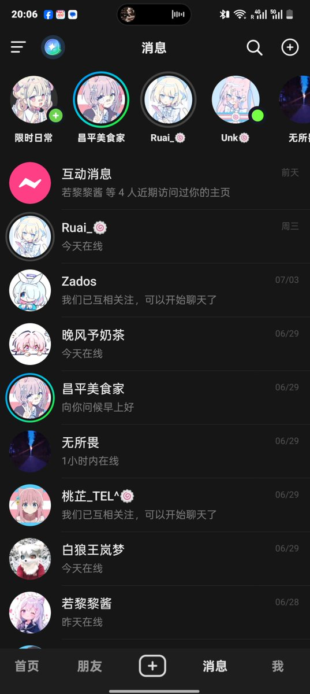
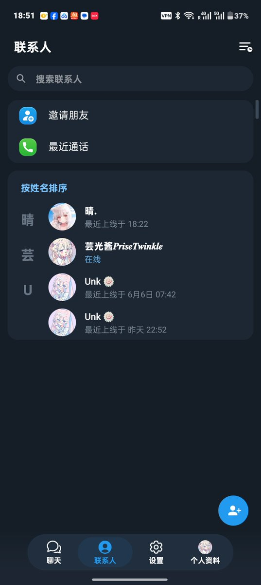
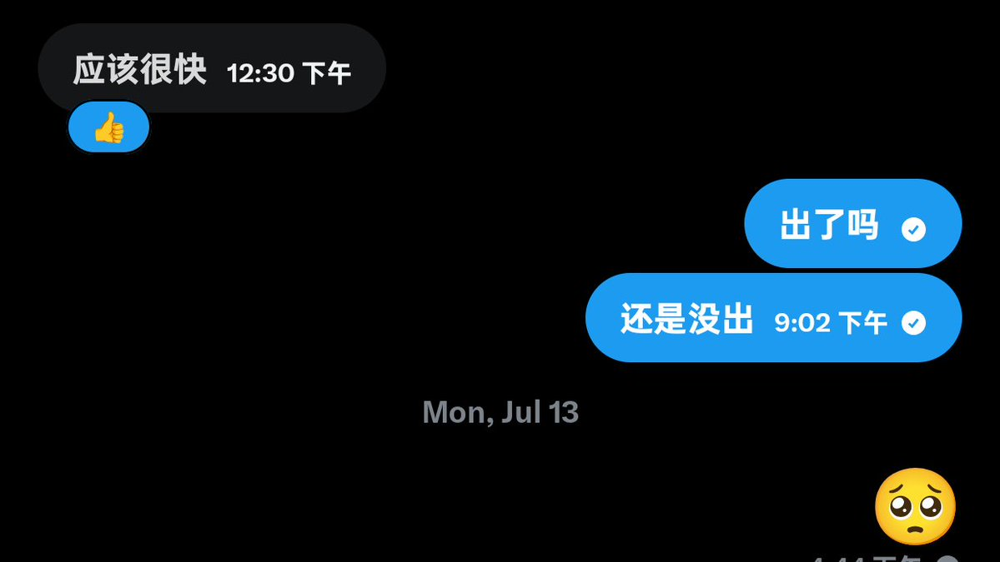

沐桃
@xiey57828
@Yg_Xyn 晚风予奶茶😱🤤😋



芸光酱𝑷𝒓𝒊𝒔𝒆𝑻𝒘𝑖𝑛𝑘𝒍𝒆 🍥🏳️⚧️
@Yg_Xyn
看事情不能只看表面，尝试推测一下原因，根据现有的信息确实有关于unk的几种可能。
图1是自26/14 20：06（都是unk失联2天左右）拍摄的截图，在抖音上，易知Unk在线，我给她发了消息，但是读了没回。
图二是telegram好友在线列表，看第二项是Unk现用的，昨天拍摄。 https://t.co/hSbWrBihp1 https://t.co/FnokWOQAIa